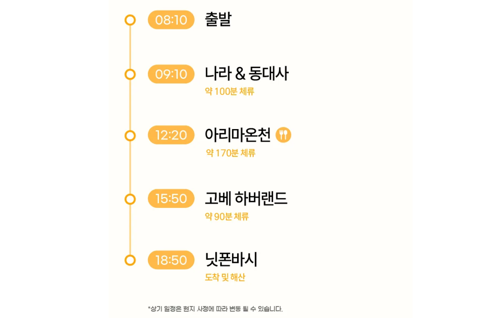

4일차 (11/4(수))
준비 해야하는 것
<여행 준비사항>
현금 충분한지 확인
교통카드 확인
와이파이도시락 충전 확인
준비물 안 챙긴 거 없는지 확인
<이동장소>
투어 집결지 (츠루동탄 소에몬초점)
아리마온천 타이코노유 오사카 나라 사슴 고베 버스투어 (4일차)
APA 호텔 앤 리조트 오사카 난바 에키마에 타워(숙소)
<밥집>
오사카 밥 모음
오사카 밥 모음 (아빠)
오사카 간식 모음
일정
